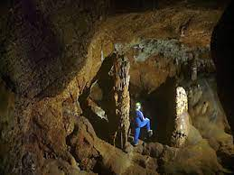
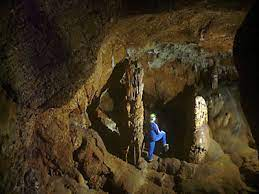

La Cova de Canet en el municipi mallorquí d'Esporles és un jaciment arqueològic situat a una cavitat càrstica de recorregut bàsicament horitzontal d'uns tres-cents metres, amb una estratigrafia plio-pleistocena que ha permès conèixer les formes arcaiques de certs endemismes fòssils balears com Myotragus antiquus, Myotragus kopperi, Hypnornys waldreni i Nesiotites ponsi. Kopper va ser el primer investigador a treballar-hi, a la darreria dels anys 70 del segle xx. A la base del pou d'accés hi ha un depòsit holocènic que ha permès ampliar el coneixement de la primera ocupació humana a l'illa de Mallorca. Un dels nivells de carbó situat a uns tres metres de profunditat es va datar en el (aproximadament) 7.220 AC. Aquests resultats feien augmentar l'antiguitat de l'entrada dels primers pobladors a Mallorca en uns 2.500 anys i és una de les ocupacions humanes més antigues de l'illa.
 
